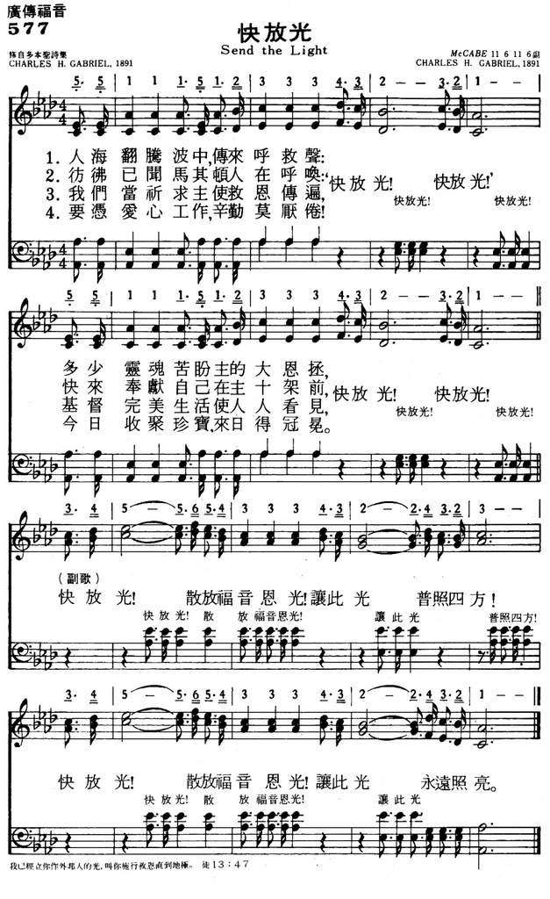

1087 Send The Light 快放光 NP577
|
|
577快放光 |
|
1 There's a call comes ringing o'er the restless wave, "Send the light!
Send the light"
There are souls to rescue, there are souls to save,
Send the light!
Send the light! Chorus:
Send the light, the blessed gospel light;
Let it shine from shore to shore!
Send the light the blessed gospel light;
Let it shine forevermore!
2 We have heard the Macedonian call today,"Send the light! Send the light!"
And a golden off'ring at the cross we lay,
Send the light!
Send the light!
[Chorus]
3 Let us pray that grace may ev'rywhere abound, "Send the light! Send the
light!"
And a Christ-like spirit ev'rywhere be found,
Send the light!
Send the light!
[Chorus]
4 Let us not grow weary in the work of love, "Send the light! Send the
light!"
Let us gather jewels for a crown above,
Send the light!
Send the light!
[Chorus]
Source: Baptist
Hymnal 2008 #364
|
1.人海翻腾波中，传来呼救声：
“快放光！（快放光）快放光！（快放光）”
多少灵魂苦盼主的大恩拯，
“快放光！（快放光）快放光！（快放光）”
（副歌）
快放光！散放福音恩光！
让此光普照四方！
快放光！散放福音恩光！
让此光永远照亮。
2.仿佛已闻马其顿人在呼喊，
“快放光！（快放光）快放光！（快放光）”
快来奉献自己在主十架前，
“快放光！（快放光）快放光！（快放光）”
3.我们当祈求主使救恩传遍，
“快放光！（快放光）快放光！（快放光）”
基督完美生活使人人看见，
“快放光！（快放光）快放光！（快放光）”
4.要凭爱心工作，辛勤莫厌倦！
“快放光！（快放光）快放光！（快放光）”
今日收聚珍宝，来日得冠冕。
“快放光！（快放光）快放光！（快放光）”
|
|

https://www.mred365.cn/szxg/7580.html
|
|
|
|
 Send The Light
Send The Light
-
The Ben Speer Singers
Send The Light
|
Short Name: |
Chas. H. Gabriel |
|
Full Name: |
Gabriel, Chas. H. (Charles Hutchinson),
1856-1932 |
|
Birth Year: |
1856 |
|
Death Year: |
1932 |
Pseudonyms: C. D. Emerson,
Charlotte G. Homer, S. B. Jackson, A. W. Lawrence, Jennie Ree

=============
For the first seventeen years of his life Charles Hutchinson Gabriel (b.
Wilton, IA, 1856; d. Los Angeles, CA, 1932) lived on an Iowa farm, where
friends and neighbors often gathered to sing. Gabriel accompanied them on
the family reed organ he had taught himself to play. At the age of sixteen
he began teaching singing in schools (following in his father's footsteps)
and soon was acclaimed as a fine teacher and composer. He moved to
California in 1887 and served as Sunday school music director at the Grace
Methodist Church in San Francisco. After moving to Chicago in 1892, Gabriel
edited numerous collections of anthems, cantatas, and a large number of
songbooks for the Homer Rodeheaver, Hope, and E. O. Excell publishing
companies. He composed hundreds of tunes and texts, at times using
pseudonyms such as Charlotte G. Homer. The total number of his compositions
is estimated at about seven thousand. Gabriel's gospel songs became widely
circulated through the Billy Sunday-Homer Rodeheaver urban crusades.
Bert Polman
Words: Charles Hutchinson Gabriel (b. Aug. 18, 1856; d.
Sept. 15, 1932)
Music: Charles Hutchinson Gabriel
Links:
Wordwise Hymns (Charles
Gabriel born)
The Cyber
Hymnal
Hymnary.org
Note: Charles Gabriel was one of the most prolific gospel song
writers at the end of the nineteenth century and the beginning of the
twentieth. Many of his creations are still found in our hymn books. For
example:
He Lifted Me
More Like the Master
My Saviour’s Love
O It Is Wonderful
O That Will Be Glory
Send the Light
For these he wrote both words and music. But in other cases he either
provided the text (e.g. I’ll Go Where You Want Me to Go) or
composed the tune (e.g. Higher Ground). The present song
was written in 1890. At the time, Mr, Gabriel was the choir director at
Grace Methodist Episcopal Church, in San Franciso.
There is some question about the occasion for which the song was
written. When it was first published, it bore the inscription, “For the
Easter Service.” However, in later years Charles Gabriel wrote that the
song was for a Missionary Day in the church’s Sunday School, when a
“golden offering” (see CH-2) was taken to support foreign missionaries
in their work. It’s possible these two things took place on the same
day.
The Bible uses the symbolism of light in a number of
ways. There it represents the light of truth, found in the Bible (e.g.
Ps. 119:105, 130). It’s also a symbol of the light of truth and holiness
found in the person of Christ. He said, “I am the light of the world. He
who follows Me shall not walk in darkness, but have the light of life”
(Jn. 8:12)–life providing another use of the symbol (cf.
Job 33:30; Ps. 36:9; 56:13).
These three things: the “light” of truth, of holiness, and life, are
applied to the saints, as well. We have them in a derivative sense. That
is, in ourselves, in our sinful fallen state, we are darkness, and in
darkness. But by the saving work of God we are given light. “For you
were once darkness, but now you are light in the Lord. Walk as children
of light” (Eph. 5:8).
Christians live in a world of sinners, “among whom you shine as
lights in the world, holding fast the word of life” (Phil. 2:15-16).
“Let your light so shine before men, that they may see your good
works and glorify your Father in heaven” (Matt. 5:16).
The Lord says to Paul, “I will deliver you from the Jewish
people, as well as from the Gentiles, to whom I now send you, to
open their eyes, in order to turn them from darkness to light, and
from the power of Satan to God, that they may receive forgiveness of
sins and an inheritance among those who are sanctified by faith in
Me” (Acts 26:17-18).
These texts suggest that we are light bearers, and light reflectors
(cf. “a Christlike spirit” CH-3). But being a light sender is
something else, and clearly that is the emphasis of the song. As
witnesses for the Lord we carry the light. But as those who support
other servants of Christ by our prayers, and by our gifts (our “golden
offerings” CH-2), we extend the light of the gospel to other places
where, perhaps, we are unable to go.
Thus the Apostle Paul expresses his appreciation for the help and
support of the Philippian Christians (Phil. 4:13-18) that enabled him to
be a light-bearer elsewhere. One of the places the missionaries went (on
Paul’s second missionary journey) was Macedonia. That outreach came
about this way.
“A vision appeared to Paul in the night. A man of Macedonia stood
and pleaded with him, saying, ‘Come over to Macedonia and help us.’
Now after he had seen the vision, immediately we sought to go to
Macedonia, concluding that the Lord had called us to preach the
gospel to them” (Acts 16:9-10).
This is the “Macedonian call” Charles Gabriel refers to in CH-2. A
summons to spread the light of the gospel still further, until we fulfil
our mandate: “Go into all the world and preach the gospel to every
creature” (Mk. 16:15).
CH-1) There’s a call comes ringing o’er the restless wave,
“Send the light! Send the light!”
There are souls to rescue, there are souls to save,
Send the light! Send the light!
Send the light, the blessèd gospel light;
Let it shine from shore to shore!
Send the light, the blessèd gospel light;
Let it shine forevermore!
CH-4) Let us not grow weary in the work of love,
“Send the light! Send the light!”
Let us gather jewels for a crown above,
Send the light! Send the light!
Questions:
1) What kinds of things can we do, as individuals, and as churches, to
take the gospel to all the world?
2) Why is the cause of world missions less vibrant and urgent in
North America today than it was a generation or two ago?
Links:
Wordwise Hymns (Charles
Gabriel born)
The Cyber
Hymnal
Hymnary.org
https://wordwisehymns.com/2014/01/27/send-the-light/
"SEND THE LIGHT"
"…Come over into Macedonia, and help us" (Acts 16.9)
INTRO.: A song which uses the call of Paul’s vision in which a Macedonian asked
him to come over and help them to encourage us to sound forth God’s message of
salvation is "Send the Light" (#544 in Hymns
for Worship Revised, and #563 in Sacred
Selections for the Church). The text was written and the tune (McCabe) was
composed both by Charles Hutchinson Gabriel (1856-1932). A prolific gospel song
writer of the late nineteenth and early twentieth centuries, Gabriel provided
words and or/music for a number of well known hymns such as "Come to the Feast,"
"Harvest Time," "Glory for Me," "God Is Calling the Prodigal," "He Lifted Me,"
"Higher Ground," "His Eye Is on the Sparrow," "I Stand Amazed," "An Evening
Prayer," "Jesus, Rose of Sharon," "Where The Gates Swing Outward Never," "More
Like the Master," "Only in Thee," "Only a Step," "Since Jesus Came Into My
Heart," "I Will Not Forget Thee," "He Is So Precious to Me," and "The Way of the
Cross Leads Home," among others. "Send the Light" was produced in 1890 while
Gabriel was song director of the Grace Methodist Episcopal Church in San
Francisco, CA, for the Sunday school there and first published in his 1891
Scripture Songs with the copyright owned by E. O. Excell. The song was also
published that same year in The
New Song for the Sunday School by George F. Rosche and Co. of
Chicago, IL.
The refrain originally contained sixteen measures and began with a bass lead.
The shortened version that is more familiar seems to have been made in 1894. The
copyright was renewed in 1923. The original version, owned by George F. Rosche,
was used in the 1938/1944 (New)
Wonderful Songs for Work and Worship, edited by Thomas S.Cobb and G. H. P.
Showalter, and published by the Firm Foundation Publishing House of Austin, TX.
Among other hymnbooks published by members of the Lord’s church during the
twentieth century for use in churches of Christ, the shorter version appeared in
the 1921 Great
Songs of the Church (No. 1) and the 1937 Great
Songs of the Church No. 2 both edited by E. L. Jorgenson; the
1935 Christian
Hymns (No. 1), the 1948 Christian
Hymns No. 2, and the 1966 Christian
Hymns No. 3 all edited by L. O. Sanderson; the 1963 Abiding
Hymns edited by Robert C. Welch; and the 1963 Christian
Hymnal edited by J. Nelson Slater. Today, it may be found in
the 1971 Songs
of the Church, the 1990 Songs
of the Church 21st C. Ed., and the 1994 Songs
of Faith and Praise all edited by Alton H. Howard; the
1978/1983 Church
Gospel Songs and Hymns edited by V. E. Howard; the 1986 Great
Songs Revised edited by Forrest M. McCann; and the 1992 Praise
for the Lord edited by John P. Wiegand; in addition to Hymns
for Worship, Sacred
Selections, and the 2007 Sacred
Songs of the Church edited by William D. Jeffcoat.
The song is intended to motivate us to do whatever we can to see that the word
of God is proclaimed.
I. Stanza 1 emphasizes the need to save souls
"There’s a call come’s ringing o’er the restless wave, ‘Send the light! Send the
light!’
There are souls to rescue, there are souls to save; Send the light! Send the
light!"
A. The call that comes ringing is through the gospel: 2 Thess. 2.14
B. This call reminds us that souls need to be rescued because they are
precious: Matt. 16.26
C. And because these precious souls have sinned, they need to be saved: Heb.
10.39
II. Stanza 2 emphasizes the need to give
"We have heard the Macedonian call today: ‘Send the light! Send the light!’
And a golden offering at the cross we lay; Send the light! Send the light!"
A. Just as Paul received a call from a man of Macedonia, so the gospel calls
all Christians to shine the light out of darkness: 2 Cor. 4.6
B. While we should go where we can, no one individual can go everywhere, but
all of us can give a "golden offering" so that those who can go to other places
can be supported: Phil. 4.15-16
C. To lay this golden offering at the cross symbolizes our desire to give
bountifully and cheerfully for the work of the Lord: 2 Cor. 9.6-7
III. Stanza 3 emphasizes the need to pray
"Let us pray that grace may everywhere abound; Send the light! Send the light!
And a Christ-like spirit everywhere be found; Send the light! Send the light!"
A. God’s people should pray, especially for those who are lost: Rom. 10.1
B. We should pray that through the preaching of the gospel grace may everywhere
abound: Rom. 5.15-20
C. We should also pray that as the gospel is preached a Christ-like spirit will
be found: Rom. 8.9
IV. Stanza 4 emphasizes the need to persevere
"Let us not grow weary in the work of love; Send the light! Send the light!
Let us gather jewels for a crown above; Send the light! Send the light!"
A. In the work of sending the light, we must not grow weary: Gal. 6.9
B. We shall not grow weary if we remember that we are gathering up God’s jewels
for Him: Mal. 3.17
C. It will also help us to persevere to recall that the jewels which we gather
will also be our joy and crown: Phil. 4.1
CONCL.: The chorus urges us onward to let the light of the glorious gospel of
Christ to shine everywhere.
"Send the light! the blessed gospel light! Let it shine from shore to shore.
Send the light! the blessed gospel light! Let it shine forevermore."
As was pointed out previously, each individual Christian cannot go everywhere to
take the gospel. We can go into our own personal world of friends and
acquaintances to share the message of salvation, and where we cannot go, we
should do whatever else we can to "Send the Light."
https://hymnstudiesblog.wordpress.com/2008/10/24/quotsend-the-lightquot/


Charles H. Gabriel
Send the Light was written by Charles H. Gabriel.
Charles Hutchinson Gabriel was born August 18, 1856 in Wilton Iowa and
raised on a farm.
As a boy, Gabriel taught himself to play a small reed organ. He was
following in his father’s footsteps and leading singing schools by the age
of 16.
One folklore of his youth, is that his pastor at First Presbyterian Church,
shared his sermon topic and asked Gabriel if he knew of a song to go with
it. By that Sunday, the young man had written him a song to accompany
the sermon.
He is also believed to have written the hymn, “How Can It Be,” as a young
and published under one of his pseudonyms, Charles H. Marsh.
Gabriel was twice married, producing a child in each marriage. His
first marriage resulted in a divorce, which was very uncommon in that day
and time.
Gabriel edited numerous songs, school song books and cantatas throughout his
lifetime.
 In
1890, he was called to Grace Methodist Episcopal Church, in San Francisco,
CA as music director. While serving this church he wrote Send the
Light, when the Sunday School superintendent asked for a missionary hymn for
Easter Sunday to highlight Golden Offering.
In
1890, he was called to Grace Methodist Episcopal Church, in San Francisco,
CA as music director. While serving this church he wrote Send the
Light, when the Sunday School superintendent asked for a missionary hymn for
Easter Sunday to highlight Golden Offering.
The hymn was first sung on March 6, 1890 with great enthusiasm. A
visiting missionary heard the song and loved it so much that he carried it
back east with him. The hymn became immediately popular.
The text is believed to be based on Acts 16, when Paul has the vision of the
Man of Macedonia asking for help and to Please, send the light.
Matthew 5, says “you are the light of the world” and we are to invest in
others.

Homer A. Rodeheaver
This song about world evangelism was first published in Gabriel’s 1891
edition of Scripture songs. The copyright was owned by E. O. Excell.
In 1912, he moved to Chicago, IL and began working with Homer Rodeheaver’s
publishing company. From then on he supported himself writing hymns.
He is known to have written over 7,000 hymns, including His Eye on Sparrow,
I stand Amazed in the Presence, The Way of the Cross, Higher Ground. He
wrote under various pseudonyms, including Charlotte G. Homer.
Homer A. Rodeheaver, Gabriel’s boss, was the music director for revival
evangelist Billy Sunday and used many of Gabriel’s songs in the evangelist
campaigns. This brought great fame and success for Gabriel and allowed
him to support himself as a composer.
Gabriel wrote his autobiography titled, Sixty
Years of Gospel Song.
On September 14, 1932, Charles H. Gabirel died in Hollywood, CA.
https://dianaleaghmatthews.com/send-the-light/#.YiGc-OhBzIU